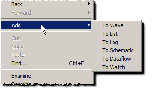

You can add Source window objects to other
dynamically linked windows with the right-click context menu.
Procedure
- In the
Source window, double-click an object to highlight it.
- Right-click
anywhere in the Source window to open the context menu.
- Select Add to
display the window options.
Figure 1. Source
Window Add Options
- Select
a window to add the selected object.
- Optionally,
to place a group of Source window objects into another window, highlight
a section of code then right click to access the menu.